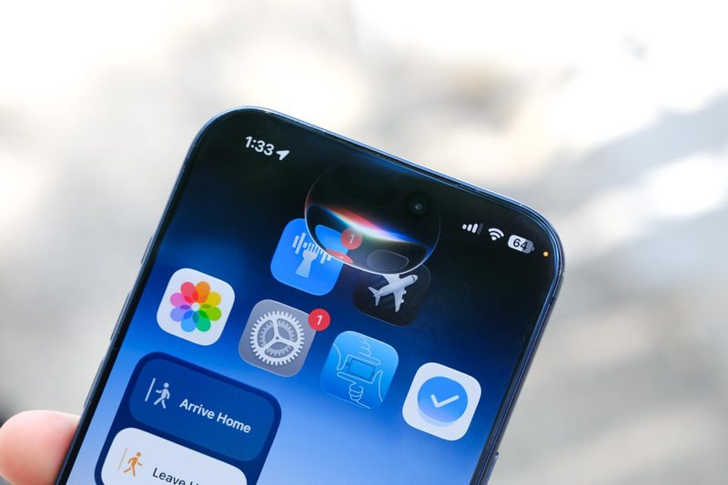
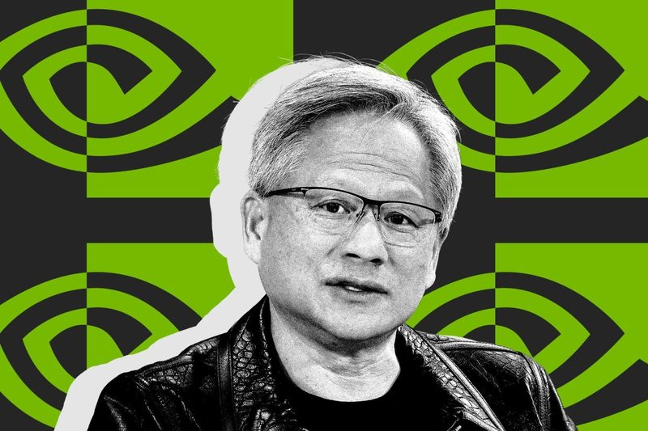
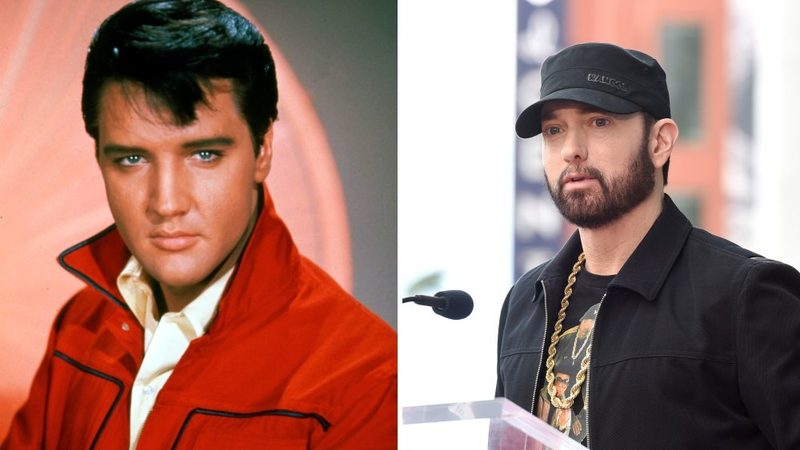
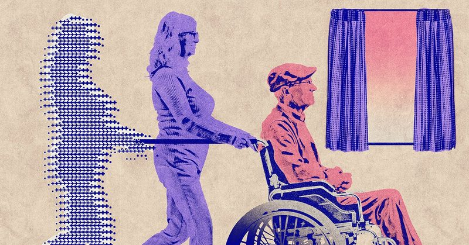
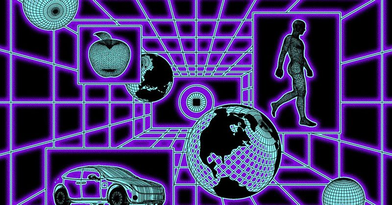

圖：David Imel／The Verge新聞#1Apple 加速改造 Siri，明年春天可望操作第三方 App
彭博記者 Mark Gurman 11 月 8 日報導，Apple 執行長 John Ternus 正催促 AI 負責人 Craig Federighi 加快 Siri 路線圖。iOS 27.3 預計讓 Siri 能細部操作 Apple 自家 App，例如在「照片」裁切旋轉圖片、整理 Safari 分頁；和第三方 App 整合（例如透過 Grubhub 點餐、OpenTable 訂位）則可能在春季推出。
💡 跟你有什麼關係：如果真的上線，iPhone 用戶可以用一句話讓 Siri 在 App 裡完成點餐、訂位等多步驟操作，不必自己一個個點開。
⚠️ 消息來自彭博引述知情人士，Apple 未正式宣布，推出時間仍可能變動。
📰 原始來源：The Verge（2026-11-09） ↗
圖：The Verge新聞#2Nvidia 董事會宣布獨立調查黃仁勳與遭指控間諜的關係
Nvidia 董事會 11 月 8 日發表聲明，針對執行長黃仁勳成為外國情報行動目標的報導，由獨立董事組成委員會、委請外部律師展開調查。報導指出，Nvidia 客戶 Megaspeed 的一名主管據稱受中國國家安全部吸收，並與黃仁勳關係密切。董事會表示目前沒有理由認為國安或公司機密外洩，黃仁勳也承諾配合。
💡 跟你有什麼關係：Nvidia 晶片是多數 AI 服務背後的基礎，這起調查牽動美中晶片管制與 Nvidia 的經營穩定，最終也可能影響 AI 服務的供應與價格。
⚠️ 這是 11/08 本頁「中國情報機關接近黃仁勳」報導的新進展。間諜指控來自紐約時報引述的美國情報備忘錄，尚未經法院認定。
📰 原始來源：The Verge（2026-11-09） ↗圖：The Next Web資金#3Anthropic 花 34 億美元買下 1.7GW 燃氣發電機，自己替資料中心供電
金融時報 11 月 8 日引述知情人士報導，Anthropic 在 9 月下旬向德州供應商 OnePWR Solutions 買下 1.7GW 重型燃氣發電機的訂單承諾，金額約 34 億美元，並包含安裝所需的工程與施工能力。FT 稱這是已知 AI 實驗室單筆最大的發電設備採購；Anthropic 沒有收購 OnePWR 本身。
💡 跟你有什麼關係：AI 用電需求大到連發電機都要搶，電力成本最後可能反映在 AI 服務的價格上，也會讓各地對資料中心的用電與排放爭議更多。
⚠️ 消息來自 FT 引述單一知情人士，路透未能獨立證實，Anthropic 與 OnePWR 未回應；發電機會用在哪裡尚不清楚。
📰 原始來源：CNBC 轉載路透（2026-11-08，引金融時報） ↗
圖：Variety／Getty Images政策#4貓王版權方與阿姆的發行商同時控告 AI 音樂平台 Suno
Variety 11 月 7 日報導，貓王 Elvis Presley 的音樂權利人（包括 Authentic Brands Group 等）與握有阿姆數百首作品的 Eight Mile Style，分別在加州北區聯邦法院控告 Suno。貓王一案指控 Suno 侵權並違反田納西州禁止 AI 複製歌手聲音的 ELVIS 法；阿姆一案則指控 Suno 讓使用者生成模仿其歌曲與歌詞的作品。
💡 跟你有什麼關係：如果你用 AI 音樂工具做歌放上網或商用，這類訴訟的結果會決定「模仿某位歌手風格」的作品能不能安心使用。
⚠️ Suno 回應表示禁止輸入特定歌手姓名與歌名，並與第三方合作過濾上傳內容。指控尚未經法院認定；阿姆本人不是原告。
📰 原始來源：Variety（2026-11-08） ↗
圖：Rob Vargas／WIRED／Getty Images觀點#5照護者 App 陸續加入 AI 助理，但照顧者的負擔仍難解
WIRED 11 月 7 日整理多款家庭照護 App：Medisafe 提醒用藥並在漏服時通知照顧者，Caring Village 內建 AI 助理 Julia 回答照護問題，Mejo 能把病史整理成一頁摘要分享給醫師與治療師。文章引用 AARP 數據，2025 年約 6,300 萬美國人在照顧有疾病或身心障礙的家人，平均每週最多花 27 小時。
💡 跟你有什麼關係：家裡有長輩或需要長期照顧的人，可以用這類 App 管理用藥、看診與分工，減少大家口頭交接漏掉的事。
⚠️ 文章作者指出，App 能減輕記事負擔，但照顧者本身的身心與經濟壓力仍需要制度支持；介紹的 App 以美國市場為主，台灣能否使用需自行確認。
📰 原始來源：WIRED（2026-11-07） ↗
圖：Jacqui VanLiew／WIRED／Getty Images教學#6什麼是「世界模型」？讓機器人與自駕車先在模擬世界練習
WIRED 11 月 8 日解說世界模型：語言模型是預測下一個字，世界模型則是看到一張畫面後預測下一個畫面，能模擬物理與因果。Pokémon Go 開發商 Niantic 轉型的 Niantic Spatial、Odyssey、自駕公司 Wayve 都在做，例如用行車記錄器畫面重建危險路況來訓練自駕系統。
💡 跟你有什麼關係：你未必會直接用到世界模型，但未來的家用機器人與無人車是否安全可靠，很大程度取決於它們在這種模擬世界裡練得夠不夠。
⚠️ 文章提到 2027 年可能是家用機器人與無人車擴張的一年，屬受訪者看法，並非確定時程。
📰 原始來源：WIRED（2026-11-08） ↗✅ 2026/11/9（一） 可以做：如果你常用 Siri，可以先想好兩三件希望它幫你在 App 裡完成的事，等新版推出時直接試，比較快判斷值不值得用。
🗂️ 過去 14 天